Exam Like Questions: Module 8
Lecture 18
T/F
1) Special man-made materials have refractive indices less than one.
Answer: False
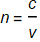
If n<1 then c<v and information cannot travel faster than the speed of light.
Bonus material:
However, outside of the context of this course the refractive index can be less than 1 because the phase velocity of light does not carry information and could “travel” faster than the speed of light. Good, now push that additional information out of your head, you do not need it for this course.
2) The glass prism uses the principle of dispersion in which blue light is refracted more than red light.
Answer: True
Snell’s Law: 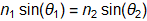
Refractive indices is related to wavelength so 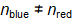 for glass
Multiple Choice
1) Light is polarized when the ray strikes the glass of refractive index 1.55 if the incidence angle is a) 40.2° ,b) 0° ,c) 57.2° , or d) 90°
Answer: C
Polarizing Angle: 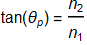
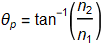
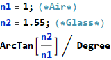
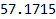
2) Light travelling in a fiber optics cable whose refractive index is 1.47 with a cladding/sleeve of refractive index 1.07 must have an incidence angle greater than: a) 42.9° ,b) 55.8° ,c) 54.9° ,or d) 46.7°
Answer: D
Fiber optics and total internal reflection: 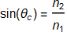
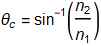
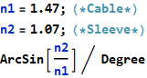
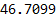
Useful Exercises
1) A prism with a 60° equilateral triangle cross section is sitting on a horizontal surface. A horizontal light beam strikes the prism whose refractive index is 1.45 what angle to the horizontal will the beam make as it exits the prism.
Answer: 38.2° from horizon
Snell’s Law:
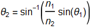
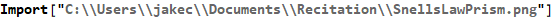
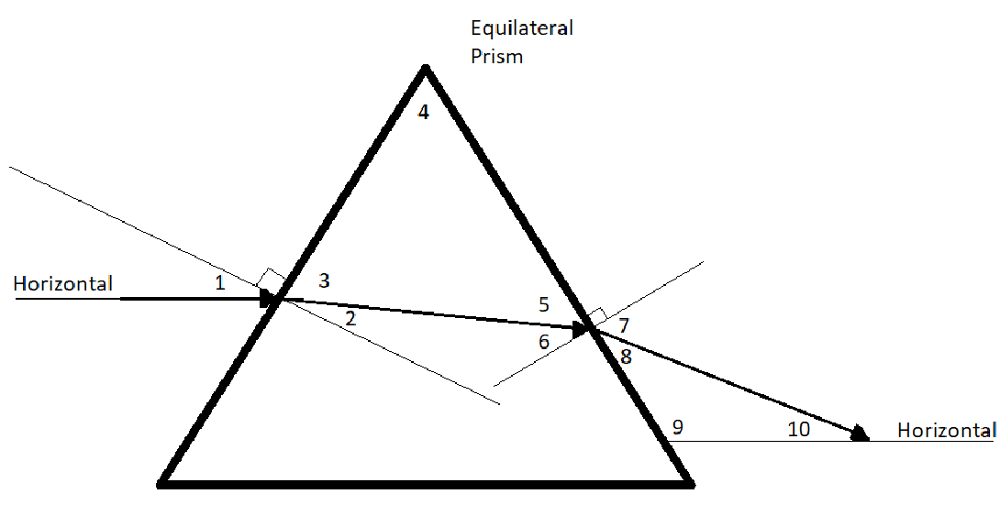
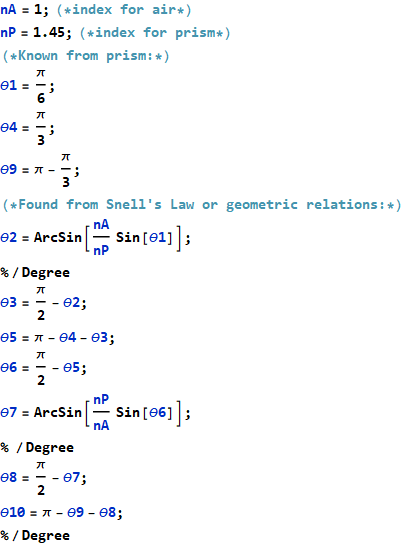
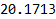
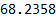
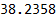
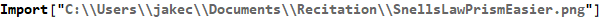
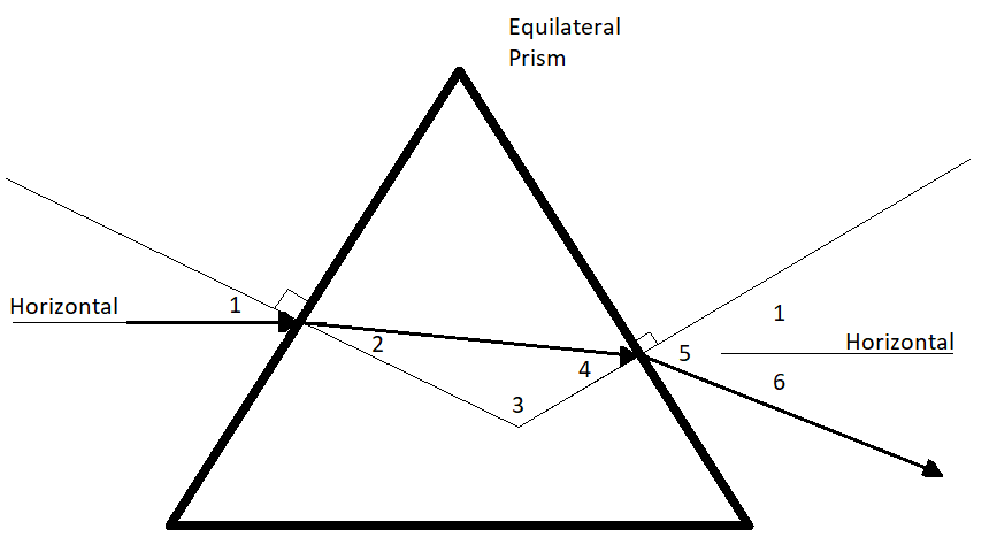
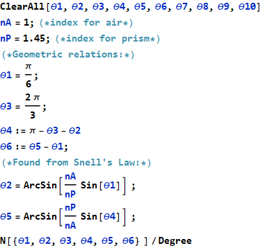
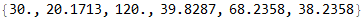
2) Blue and red light laser pulses simultaneously enter a 2.5m long glass block; a) if the blue light refractive index is 1.65 how long before the blue light exits the glass block? and b) the refractive index for the red light is 1.53 how much earlier or later will the red light take before exiting the glass block?
Answer: 10.*10^^-10 seconds apart
Refractive index: or 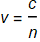
Velocity Relation: 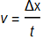
Therefore, 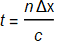
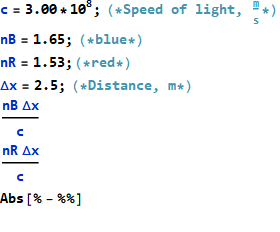
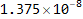
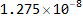
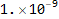
Do we need to consider special relativity?
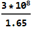
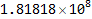
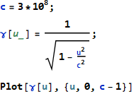
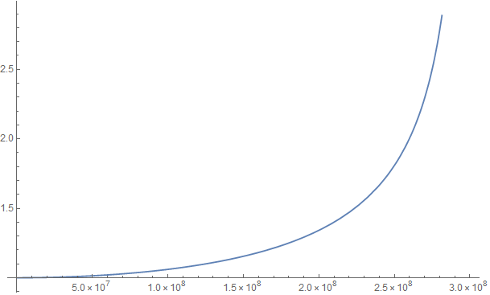